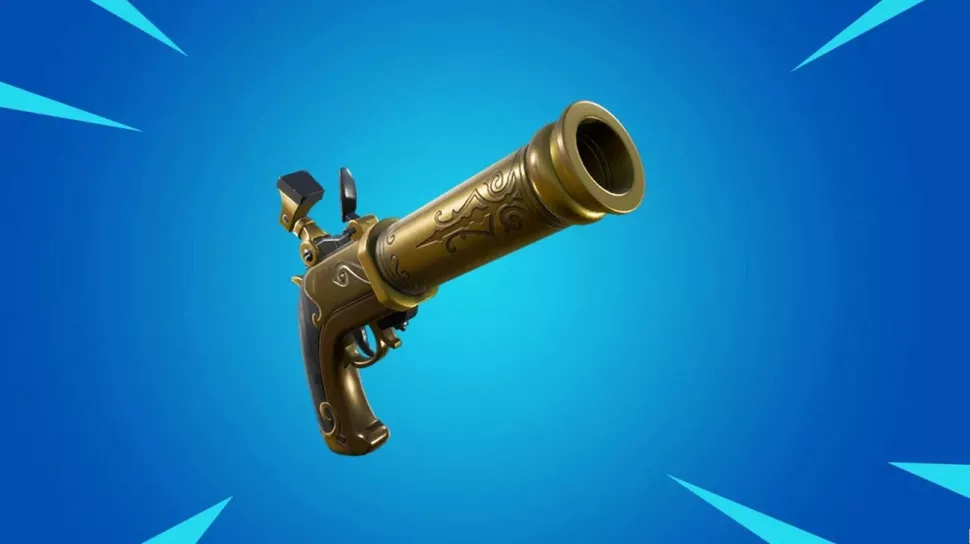

Fortnite 15.40 Notas del Parche: Cada arma, skins, arrgeglos de bugs y más
By Joseph Knoop a days ago
Everything you need to know about the latest update.

(Image credit: Epic Games)
Fortnite's latest update is finally out, and it's a whopper. The 15.40 patch notes are chock full of details about returning weapons, new skins, new events, and all the usual good stuff that dedicated Fortnite players are eager to crack into.
As usual, Epic has put some work in on bug fixes that will hopefully address any gameplay issues players may have been experiencing.
Here's everything you need to know about the 14.50 update.
(Image credit: Epic Games)
Fortnite patch notes: The Flint Knock returns and more exotic NPC weapons
The Flint Knock pistol has been unvaulted, meaning firefights just got a little more boisterous. The Flint Knock pistol uses heavy ammo and deals 86 max damage, but a headshot multiplies that by 2.0. The best part of the Flint Knock is that, at a close range, it will shove your enemy backwards, making it incredibly dangerous in either tight quarters or on the side of a cliff.
Epic has also said that NPCs will be getting more exotic weapons for players to purchase with gold bars, so expect matches to get more heated.
Fortnite 15.40 update: New skins and cosmetics
Data miners are hard at work uncovering every new skin and cosmetic that will be added at some point in the near future. Here's a rundown of everything the more reliable data miners have uncovered.
New bundles (via @VastBlastt) pic.twitter.com/FYvmWDf45B
— ShiinaBR - Fortnite Leaks (@ShiinaBR) February 16, 2021
A new popcorn emote will be added on February 19, and I'm sure it's going to appear in every fan video from now on.
The Jumbo Popcorn Emote will be in the shop on February 19! pic.twitter.com/q1RXdvp0hE
— ShiinaBR - Fortnite Leaks (@ShiinaBR) February 16, 2021
New cosmetics (via @FunGamesLeaks) pic.twitter.com/0JbugP8gTb
— ShiinaBR - Fortnite Leaks (@ShiinaBR) February 16, 2021